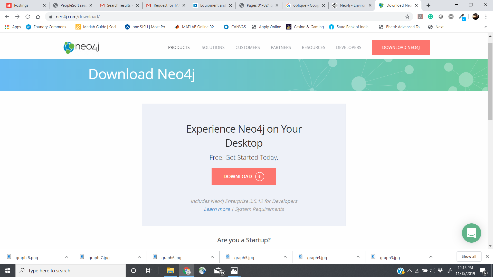
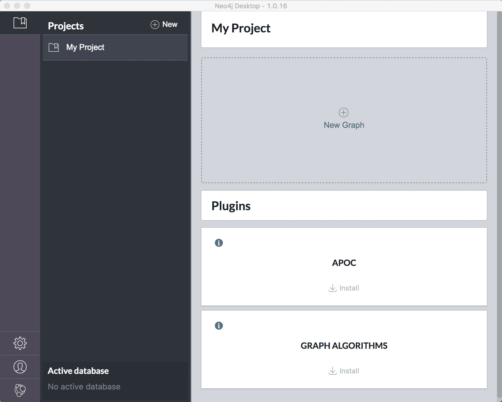
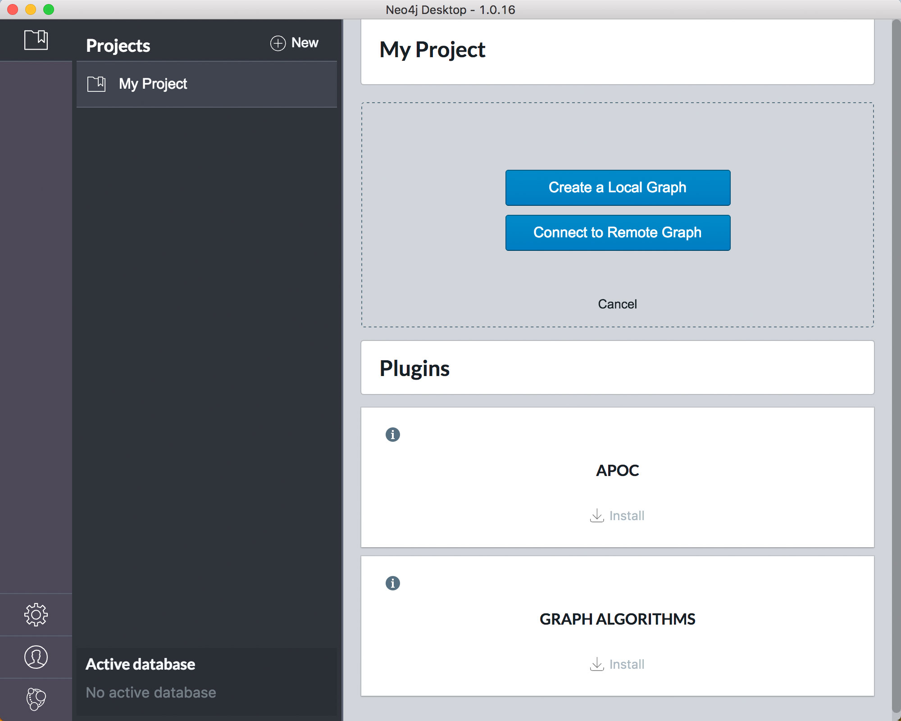
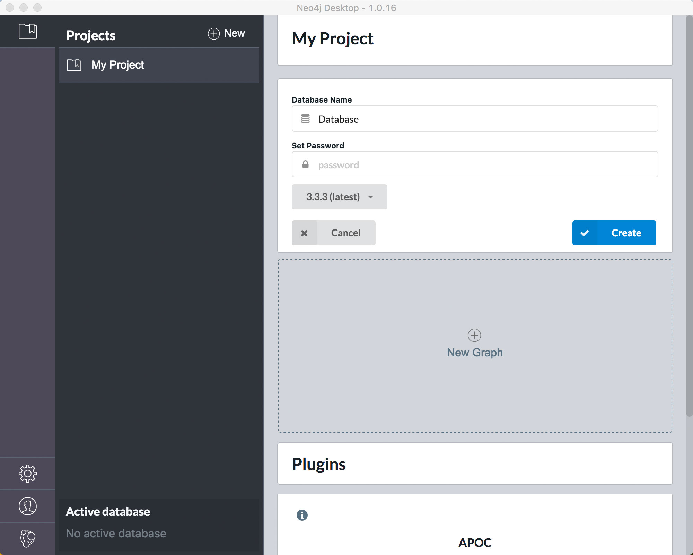
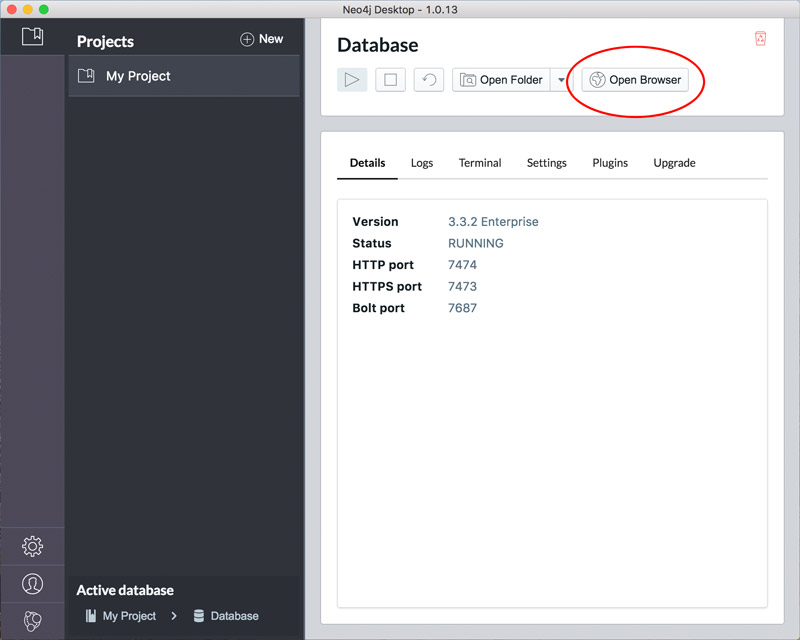

SettingUp Neo4j
Step 1 − Visit the Neo4j official site using On clicking here.
,this link will take you to the homepage of neo4j website.


This will turn into two blue buttons. Click the one labeled, “Create a Local Graph.”

Enter the password of your choice in the “Set Password” field. Then, click the blue button labeled “Create.”
The “Create” button will soon be replaced by a “Start” button. Click it.

Open the Neo4j Browser
Once the database has started, click the “Manage” button.

Click on the “Open Browser” button that will appear in the Database Management area. The browser will open in a new window, as shown below.
